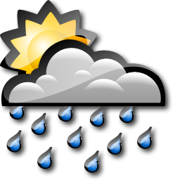

The Weather Desklet can retrieve weather data from several online weather services and display them on your Cinnamon desktop in a neat way. It comes with a choice of icons and plenty of options for configuring how it looks, and for those who like to keep an eye on the weather in several locations it supports multiple instances. At present it can work with data from the BBC, Yahoo! Weather, Open Weather Map, Weather Underground, World Weather Online and forecast.io.
By default the forecast will be refreshed approximately every thirty minutes. You can always force a refresh by clicking the refresh button at the bottom right. Hovering over the icons in the forecast area will show a brief descriptions of the forecast, whilst clicking on the current weather icon or the credit link at the bottom of the desklet will take you to a more detailed forecast for your area.
Right click on the desklet and select 'Configure...' to enter the configuration screen.
Select the sevice you wish to use to provide weather data. Note that some services require you to obtain an API key by registering with them.
The Location must be specified as a code and these codes are specific to the service that you are using. Below are notes on each of the services supported.
To find your location code visit the BBC Weather site and search for your city. The code you need is the numeric part at the end of URL for the city's weather. For example, a search for London takes you to:
http://www.bbc.co.uk/weather/2643743
The Location code is therefore 2643743.
Visit the Open Weather Map and search for your city. The code you need is the numeric part at the end of URL for the city's weather. For example, a search for Chicago takes you to:
http://openweathermap.org/city/4887398
The Location code is therefore 4887398.
Open Weather Map does not require an API Key, but it is recommended that you use one. To obtain an API Key for Open Weather Map register on the Open Weather Map website.
Visit Yahoo! Weather and search for your city. The code you need is the numeric part at the end of URL for the city's weather. For example, a search for Berlin takes you to:
http://weather.yahoo.com/deutschland/bundesland-berlin/berlin-638242/
The Location code is therefore 638242.
Weather Underground requires an API key. You can obtain a free developer API key here. Weather Desklet uses the 10 day forecast data, so you will need to get at least the Cumulus Plan.
There are several ways to specify the location for Weather Underground. For locations in
the USA you can simply use a zip code. You can also give a latitude and longitude. These
should be decimals, separated by a comma, with positive being north or east. For example, for
central London, 51.51N, 0.13W, use 51.51,-0.13.
You can also specify locations as Country/City, eg France/Paris,
or within the USA as State/City, eg TX/Houston. You should
check that your proposed location works by visiting the website, eg
http://www.wunderground.com/q/France/Paris
If you search for your city on wunderground.com and are taken to URL of this form:
http://www.wunderground.com/q/zmw:00000.16.03541
use the section following the q, eg zmw:00000.16.03541. If you
are taken to a URL with a station ID such as:
http://www.wunderground.com/global/stations/03541.html
you can convert this to a zmw code by taking the station number (03541 in this case)
and prefixing it with zmw:00000.1. to give
zmw:00000.1.03541
World Weather Online requires an API key. You can register for a free API key here.
Locations can be specified as a US zipcode, a UK or Canadian post code, or as a latitude and longitude.
Latitude and longitude should be given as decimals, separated by a comma, with positive being north or east. For example, for
central London, 51.51N, 0.13W, use 51.51,-0.13.
Forecast.io requires an API key. You can register for a free API key here.
Locations must be specified as a latitude and longitude.
Latitude and longitude should be given as decimals, separated by a comma, with positive being north or east. For example, for
central London, 51.51N, 0.13W, use 51.51,-0.13.
Select the period between refreshing forecasts. The default of 30 minutes should be adequate for most purposes. Please consider the impact of lower refresh times on the service provider's servers and do not use lower refresh periods unless you have a very good reason. In order to comply with the terms of use of some providers Weather Desklet will override low settings in some cases and enforce a minimum.
Most of the other settings should be obvious - just experiment. Please note, however, that not all services support all settings. For example, some support only a limited number of days of forecast, or do not support humidity or pressure. If you change the configuration and the display doesn't seem to change, it's probably because the service you have selected does not support the new options.
Here's a sample of what the different icon sets look like, or view the full icon sets here.
| Colourful | Light | Dark |  | Novacon | VClouds | ||||
| Flat colouful | Flat white | Flat black | Weezle |
The BBC Weather Desklet is written by Chris Hastie and released under the GNU General Public License version 3. It is a fork of Loganj's AccuWeather Desklet, which is released under the “use it as you like” license. Copyright © 2014 Chris Hastie, 2013 Loganj.
The desklet makes use of the marknote xml library, which is Copyright © 2011 jbulb.org and redistributed under the terms of Apache Licence, Version 2.0.
The colourful, flat colourful, light, dark, flat white and flat black icons are based on the plain weather icons by Merlin The Red. They are licensed under the Creative Commons Attribution-NonCommercial-ShareAlike license and are copyright © 2010 Merlin the Red.
The VCloud icons are copyright © 2010 Vclouds and are licensed under the Creative Commons Attribution-NonCommercial-ShareAlike license
The Weezle icons are copyright © 2010 d3stroy and are licensed under the Creative Commons Attribution-No Derivitives license
The Novacon icons are copyright © 2004 digitalchet and are licensed under the Creative Commons Attribution-NonCommercial-ShareAlike license
City name lookups when using the forecast.io data service are provide by Geonames.